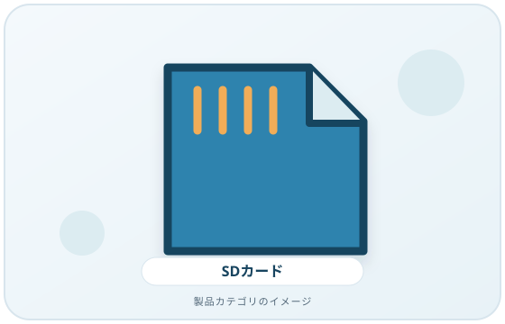
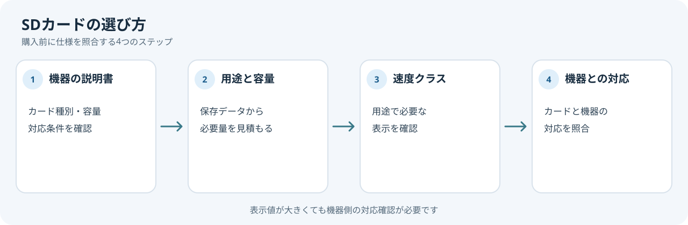

SDカードの数字や記号は、どの機器でも同じ速度が出るという意味ではありません。カメラやカードリーダーが必要とする規格を調べ、カード側と照合してから選びます。
画像・ボタンはAmazonアソシエイトリンクです。適格購入により紹介料を得る場合があります。

Amazon.co.jpで「SDカード」を探す ↗

最初に機器の説明書を見る
カメラ、レコーダー、PCなど、カードを使う機器の説明書で対応するカード種別、容量範囲、速度クラスを確認します。カードと機器の組み合わせによっては、認識しない、または容量が制限される場合があるとSD Associationは案内しています。
速度クラスの記号を確認
SD Associationの速度クラス表示には、Speed Class、UHS Speed Class、Video Speed Class、SD Express Speed Classがあります。記号と数字は、規格で定めた条件下での最低書き込み性能を示すためのものです。動画撮影など継続した書き込みが必要な用途では、機器メーカーが指定するクラスに合うカードを選びます。
カードのクラスだけでなく、機器側がそのバス規格に対応するかも確認します。上位の数字が付いたカードを買えば、どの機器でもその性能を使えるとは限りません。
容量と用途も照合する
必要な容量は、撮影形式や保存するデータによって異なります。機器の対応容量を超えないかを説明書で確かめ、必要量を見積もります。スマートフォンやカメラの機種を特定できない場合は、先にメーカーの仕様を確認してください。
購入前の確認メモ
- カードを使う機器の型番と取扱説明書
- 機器が対応するカード種別と容量
- 用途に必要な速度クラスの指定
- カードリーダーや機器側の対応規格
機器の説明書から必要条件を先に写し、カードの表示と照合します。カード側の速度クラスだけでは、機器で使える性能は判断できません。
まとめ
「カード側の速度クラス」「機器側の対応クラス・容量」「用途」を組み合わせて選ぶのが基本です。この記事では特定カードの速度測定や動画撮影テストをしていません。
出典
- Speed Class — SD Association（確認日: 2026-10-07）
- FAQ — SD Association（確認日: 2026-10-07）